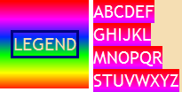

RC3004: 各浏览器中折行的行内元素的背景图片渲染存在差异
标准参考
根据 CSS2.1 规范中的描述，'background-image' 特性可以设定元素的背景图片，此特性可应用于所有元素。
在 'background-repeat' 特性介绍中提到，作用在行内元素上的 'background-image' 特性的平铺及位置在这个版本的规范中没有定义，未来版本的 CSS 可能会定义行内元素上的 'background-image' 如何平铺及定位。
在 CSS3 草案的背景及边框模块定义中新增加了 'box-decoration-break' 特性，若一个框会被分页、分栏打破，或是行内元素被折行，则 'box-decoration-break' 特性指定了这些被打断的框被视作为连续的框还是彼此相对独立的框，由此决定其 border 与 padding 的渲染，而对于背景，定义了背景定位区域 (background positioning area) 如何由这些众多的框中派生以及如何在它们内部渲染。
关于 背景 的详细信息，请参考 CSS2.1 规范 14.2 The background 及 CSS3 草案 CSS Backgrounds and Borders Module Level 3 中的内容。
问题描述
若行内元素设定了背景图片并发生折行，在 IE6 IE7 IE8(Q) 中，由折行形成的若干新的行内框仍然会连续渲染其设定的背景图片；在其他浏览器中，此若干新的行内框会彼此独立渲染器设定的背景图片。
造成的影响
此问题会导致背景图片在不同浏览器中出现差异，可能导致依赖背景图片的设计在某些浏览器中异常。
受影响的浏览器
| 所有浏览器 |
|---|
问题分析
分析以下代码：inline_bg.html
<!DOCTYPE html>
<html>
<head>
<style>
body { margin:0; font:20px 'Trebuchet MS'; color:white; }
.clearfix { zoom:1; overflow:hidden; }
.container { width:100px; float:left; background:wheat; }
.legend { width:100px; height:100px; float:left; margin-right:5px; background-image:url(bg.gif); line-height:100px; text-align:center; color:wheat; }
.legend span { border:3px solid navy; }
</style>
</head>
<body>
<div class="clearfix">
<div class="legend"><span>LEGEND</span></div>
<div class="container">
<span style="background-image:url(bg.gif);">ABCDEF<br />GHIJKL<br />MNOPQR<br />STUVWXYZ</span>
</div>
</div>
</body>
</html>
上面代码左侧为背景图片图例，右侧的 DIV 元素中有一个设定了背景图片的 SPAN 元素，在 SPAN 元素内使用 BR 元素迫使其折行。
这段代码在不同浏览器中运行结果如下：
| IE6 IE7 IE8(Q) | IE8(S) Firefox Chrome Safari Opera |
|---|---|
 |
 |
可见，
- 在 IE6 IE7 IE8(Q) 中，若行内元素设定了背景图片并发生折行，由折行形成的若干新的行内框仍然会连续渲染其设定的背景图片，仍然表现得像一个单独的框；
- 在 其他浏览器 中，若行内元素设定了背景图片并发生折行，此若干新的行内框会彼此独立渲染器设定的背景图片，表现得像众多独立的行内框。
下面为 SPAN 元素设定 display:inline-block，再观察背景图片的渲染：inline-bg_bfc.html
<!DOCTYPE html>
<html>
<head>
<style>
body { margin:0; font:20px 'Trebuchet MS'; color:white; }
.clearfix { zoom:1; overflow:hidden; }
.container { width:100px; float:left; background:wheat; }
.legend { width:100px; height:100px; float:left; margin-right:5px; background-image:url(bg.gif); line-height:100px; text-align:center; color:wheat; }
.legend span { border:3px solid navy; }
</style>
</head>
<body>
<div class="clearfix">
<div class="legend"><span>LEGEND</span></div>
<div class="container">
<span style="background-image:url(bg.gif); display:inline-block">ABCDEF<br />GHIJKL<br />MNOPQR<br />STUVWXYZ</span>
</div>
</div>
</body>
</html>
 此时各浏览器中的运行效果均相同 (如左图)，即在所有浏览器中，由折行形成的若干新的行内框仍然会连续渲染其设定的背景图片。
此时各浏览器中的运行效果均相同 (如左图)，即在所有浏览器中，由折行形成的若干新的行内框仍然会连续渲染其设定的背景图片。
这是由于 display:inline-block 在 IE6 IE7 IE8(Q) 中触发了其 hasLayout 特性 (即使其拥有了布局)，在 其他浏览器 中其创建了新的 block formatting context。此时 SPAN 元素为行内块元素，其内虽然由 BR 元素产生了折行，但这些折行产生的行内框均从属于行内块框内部 (不像普通行内元素折行后会被拆分成若干独立的行内框)，故为其设定背景图片会在其内部所有行内框中连续渲染。
行内元素设定 'background-image' 是 CSS2.1 规范中的盲点。虽然 CSS3 草案中新增了 'box-decoration-break' 特性，但目前所有浏览器均未提供支持。
解决方案
避免为普通行内元素设置 'background-image' 特性，若需要为行内级元素设置背景图片，可以将其转换为行内块元素 display:inline-block。
参见
知识库
相关问题
测试环境
| 操作系统版本: | Windows 7 Ultimate build 7600 |
|---|---|
| 浏览器版本: | IE6 IE7 IE8 Firefox 3.6.10 Chrome 8.0.552.0 dev Safari 5.0.2 Opera 10.63 |
| 测试页面: | inline_bg.html inline_bg_bfc.html |
| 本文更新时间: | 2010-10-19 |
关键字
background background-image tile CSS3 背景 图片 inline 行内